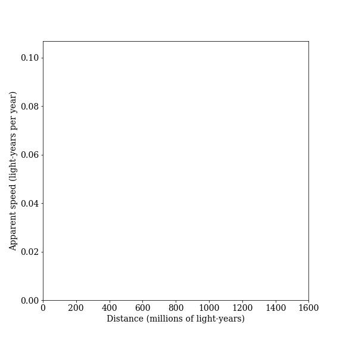
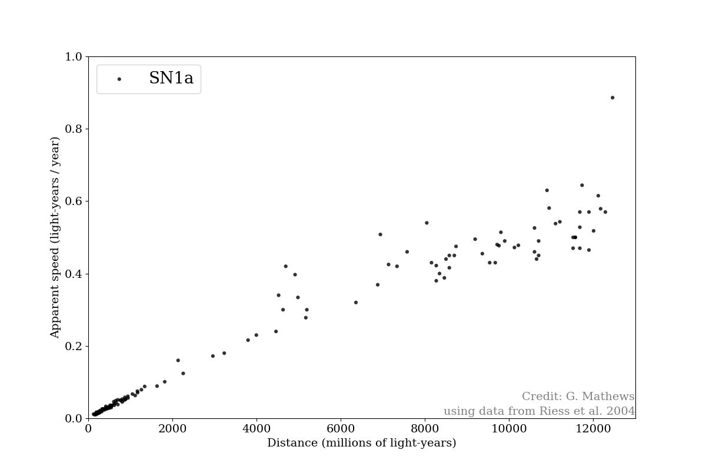
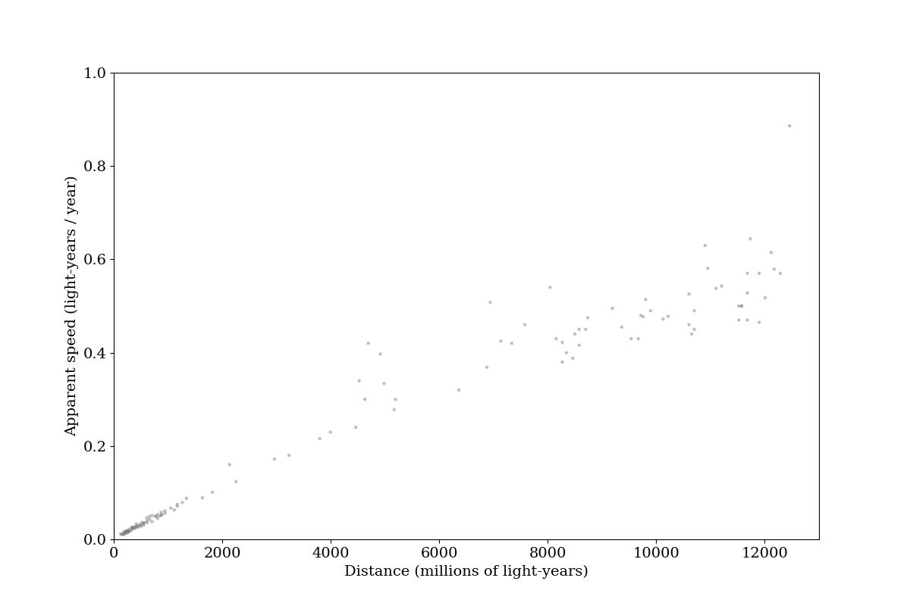
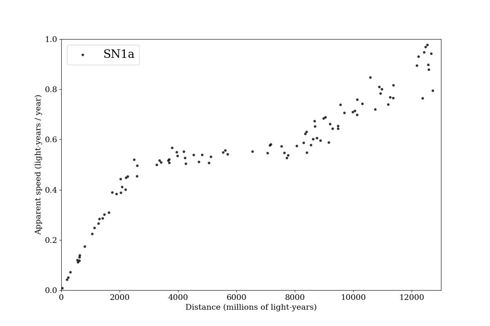

Blank Hubble plot, showing the apparent recession speed of a galaxy vs. its distance from us.

Hubble plot showing Supernova type 1A measurements from Riess et al, 2004. Catalog values for redshift and distance were converted to less technical terms, percentage of speed of light and distances in millions of light-years.

Hubble plot showing Supernova type 1A measurements from Riess et al, 2004, gray for overlays

Model Hubble plot for a simulated expansion history. This illustrates a universe that has had much more dramatic (and clearly visible by eye) changes in the expansion rate, starting with a medium, then a slow, and finally a fast expansion rate.

Simulations (all done with Netlogo, code is available under the Netlogo code tab for each)
Cosmological Expansion, not used in review. Allows users to qualitatively explore how differences in initial separation and differences in expansion rate lead to the changing distance between a pair of galaxies.
Cosmological Expansion, with graphs, not used in review. Similar to the first model, but with graphs to help track the separation and apparent velocity over time, and a third graph to compare those two dependent variables against each other.
Cosmological Expansion with Multiple Galaxies, not used in review. Similar concept, but now showing how multiple galaxies appear from the perspective of an observer, with optional marks placed each billion years in the simulation to help illustrate the increase in recession velocity wih distance.
Cosmological Expansion with Multiple Galaxies and Redshifting Photons, used in review. Simulation showing a number of galaxies being carried away from an observer by the epansion of space. Each galaxy emits photons towards the observer, and their relative motion and redshifting is tracked (again, taking into account the expansion of space). When each photon reaches the observer on the left, its redshift is converted to an apparent speed (via Doppler-shift equation), and its initial distance is plotted. The ability to pause and clear the plot allows for simulation of an observers' experience - i.e., we only detect and measure the photons that are reaching us now, rather than all the photons that have ever been sent to Earth - and thus, this can be used to simulate our observations of redshifts of distant objects and even qualitatively re-create (by changing the expansion rate) the observed change in the slope of the Hubble plot.